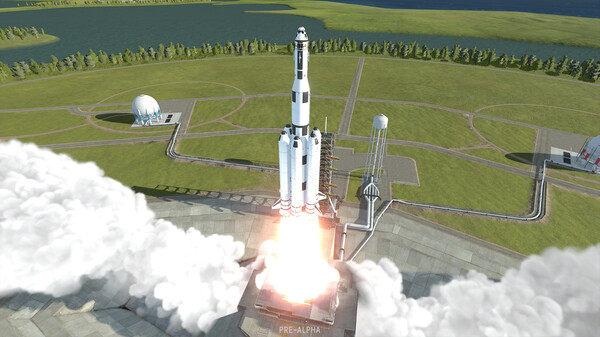

The original Kerbal Space Program is one of the most beloved games of all time and, years after its release, it's bigger than ever before. Its sequel, Kerbal Space Program 2, has been fully redesigned from the ground up to meet the demands of modern and next-generation space exploration, all while maintaining the monumental foundations of the first game. Build a space program, construct powerful spacecraft, and navigate expansive celestial bodies as you explore cosmic mysteries.
As the game updates progress, players will gain access to a whole new set of next generation tools and technology including new engines, parts, fuel, and much more. This new tech will not just create novel puzzles for players to solve, but will also enable new feats of space exploration within and beyond the original Kerbolar System.
Brand new to Kerbal Space Program 2 are colonies. Colonies not only pose their own physics challenges, but also require resource gathering to build structures, space stations, habitations, and unique fuel types. Eventually, these colonies become advanced enough for vehicle construction, propelling deep space exploration and beyond.
Will be released on:
- PC
- Xbox One
- Xbox Series S
- Xbox Series X
- PlayStation 4
- PlayStation 5